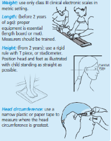
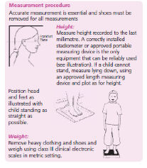
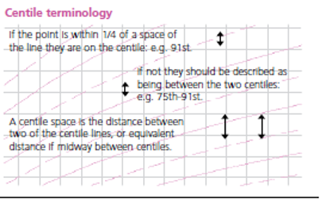

Chart information for Health staff¶
How the charts work¶
The UK–WHO growth chart combines World Health Organization (WHO) standards with UK 1990 preterm and birth data.
The chart from 2 weeks to 4 years of age is based on the WHO growth standard, derived from measurements of healthy, non-deprived, breastfed children of mothers who did not smoke.1 The chart for birth measurements (32 –42 weeks gestation) is based on British children measured around 1990.2 The charts depict a healthy pattern of growth that is desirable for all children, whether breast fed or formula fed, and of whatever ethnic origin.
The UK 1990 growth reference for children is used from 4 -18 years
Measuring children¶
Anyone who measures a child, plots or interprets charts should be suitably trained, or be supervised by someone qualified to do so. For further information and training materials see RCPCH website.
Clothing and nappies
- When measuring children up to 2 years, remove all clothes and nappy.
- Children older than 2 years should wear minimal clothing only.
- Always remove the child's shoes.
- Weight: use only class III clinical electronic scales in metric setting.
- Length: (before 2 years of age): proper equipment is essential (length board or mat). Measurers should be trained.
- Height: (from 2 years): Position head and feet as illustrated with child standing as straight as possible. Measure height recorded to the last millimetre. A correctly installed or stadiometer or approved portable measuring device rigid rule with T piece is the only equipment that can be reliably used (see illustration).
- Head circumference: use a narrow plastic or paper tape to measure where the head circumference is greatest.
 
When to weigh¶
Babies should be weighed in the first week as part of the assessment of feeding and thereafter as needed. Recovery of birthweight indicates that feeding is effective and that the child is well. Once feeding is established, babies should usually be weighed at around 8, 12 and 16 weeks and 1 year at the time of routine immunisations.
Weights measured too close together may be misleading, but if there are concerns about faltering growth, weight should be measured more often, but usually no more often than:
- daily if less than 1 month old
- weekly between 1–6 months old
- fortnightly between 6–12 months
- monthly from 1 year of age.
When to measure length or height¶
Length or height should be measured whenever there are any worries about a child’s weight gain, growth or general health. Measure length until age 2; measure height after age 2. A child’s height is usually slightly less than their length.

Assessing weight loss after birth¶
Weight gain in the early days varies a lot from baby to baby, however, by 2 weeks of age most babies will be on a centile close to their birth centile. Most babies lose some weight in the first 3-4 days after birth, but most have regained birth weight by 3 weeks of age. Careful clinical assessment and evaluation of feeding technique is indicated when weight loss exceeds 10% or recovery of birth weight is slow.
Calculating the percentage weight loss is a useful way to identify babies who need assessment.
Percentage weight loss can be calculated as follows:
Weight loss = current weight–birth weight
Percentage weight loss = (Weight loss/ Birth weight) * 100%
For example, a child born at 3.500kg who drops to 3.150kg at 5 days has lost 350g or 10%; in a baby born at 3.000kg, a 300g loss is 10%.
What do the centiles mean? These charts indicate a child’s size compared with children of the same age and maturity who have shown optimum growth. The chart also shows how quickly a child is growing. The centile lines on the chart show the expected range of weights and heights (or lengths); each describes the number of children expected to be below that line (e.g. 50% below 50th, 91% below the 91st). Children come in all shapes and sizes, but 99 out of 100 children who are growing optimally will be between the two outer lines (0.4th and 99.6th centiles); half will lie between the 25th and 75th centile lines.
Being very small or very big can sometimes be associated with underlying illness. There is no single threshold below which a child’s weight or height is definitely abnormal, but only 4 per 1000 children who are growing optimally are below the 0.4th centile, so these children should be assessed at some point to exclude any problems. Those above the 99.6th centile for height are almost always healthy. Also calculate BMI if weight and height centiles appear very different.
What is a normal rate of weight gain and growth?¶
Babies do not all grow at the same rate, so a baby’s weight often does not follow a particular centile line, especially in the first year. Weight is most likely to track within one centile space (the gap between two centile lines, see diagram). In infancy, acute illness can lead to sudden weight loss and a weight centile fall but on recovery the child’s weight usually returns to its normal centile within 2–3 weeks. However, a sustained drop through two or more weight centile spaces is unusual (fewer than 2% of infants) and should be carefully assessed by the primary care team, including measuring length/height.
Because it is difficult to measure length and height accurately in pre-school children, successive measurements commonly show wide variation. If there are worries about growth, it is useful to measure on a few occasions over time; most healthy children will show a stable average position over time.
UK children have relatively large heads compared to the WHO standard, particularly after the age of 6 months. After the age of 6 weeks a head circumference below the 2nd centile will be seen in only 1 in 250 children. A head circumference above the 99.6th centile, or crossing upwards through 2 centile spaces, should only cause concern if there is a continued rise after 6 months, or other signs or symptoms.
Why do the length/height centiles change at 2 years?¶
The growth standards show length data up to 2 years of age, and height from age 2 onwards. When a child is measured standing up, the spine is squashed a little, so their height is slightly less than their length; the centile lines shift down slightly at age 2 to allow for this. It is important that this difference does not worry parents; what matters is whether the child continues to follow the same centile after the transition.
When is further assessment required in school aged children?¶
If any of the following:
- Where weight or height or BMI is below the 0.4th centile, unless already fully investigated at an earlier age
- If the height centile is more than 3 centile spaces below the mid-parental centile.
- A drop in height centile position of more than 2 centile spaces, as long as measurement error has been excluded.
- Smaller centile falls or discrepancies between child’s and mid-parental centile, if seen in combination, or if associated with possible underlying disease.
- If there are any other concerns about the child’s growth.
Calculations as yet not implemented in the API¶
Weight–height to BMI conversion chart¶
BMI = weight in kg /(height in m)2 BMI indicates how heavy a child is relative to his or her height and is the simplest measure of thinness and fatness from the age of 2, when height can be measured fairly accurately. In a child over 2 years of age, the BMI centile is a better indicator of overweight or underweight than the weight centile; a child whose weight is average for their height will have a BMI between the 25th and 75th centiles, whatever their height centile. BMI above the 91st centile suggests that the child is overweight; a child above the 98th centile is very overweight (clinically obese). BMI below the 2nd centile is unusual and may reflect undernutrition.
Percentage median BMI¶
Here the child or young person's BMI is compared with the median value for age and sex and expressed as a percentage. It is used prinicipally in risk assessment in eating disorders.
Predicting adult height¶
Parents like to know how tall their child will be as an adult. The child’s most recent height centile (aged 2–4 years) gives a good idea of this for healthy children. Plot this centile on the adult height predictor to the right of the height chart to find the average adult height for children on this centile. Four out of five children will have adult heights that are within 6cm above or below this value. Adult Height Predictor This allows you to predict the child’s adult height based on their current height, but with a regression adjustment to allow for the tendency of very tall and short children to be less extreme in height as adults. Four girls out of five will have an adult height within ±6 cm of the predicted adult height.